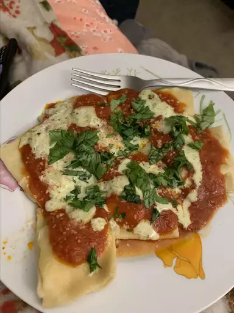

Ravioli

Description
This recipe for Ravioli is sure singular. I have never seen
such a collection of steps so remarkable as this recipe we
have here. Please enjoy this delectable masterpiece and
orgasmically delight your palate with but the finest of
culinary experiences.
Ingredients
- Ravioli Pasta (frozen and pre-filled)
- Marinara
- Nondescript cheese mixture
- Parsley
Steps
- Defrost pasta and reheat according to package instructions
- Heat up marinara sauce
- Prepare microwave
- Pour marinara sauce onto heated ravioli, with cheese on top
- Nuke on microwave til cheese is melty oooh wee
- Spread
cheeks Parsley on the hot mess you made
- Attempt not to ejaculate on clean silverware and plate